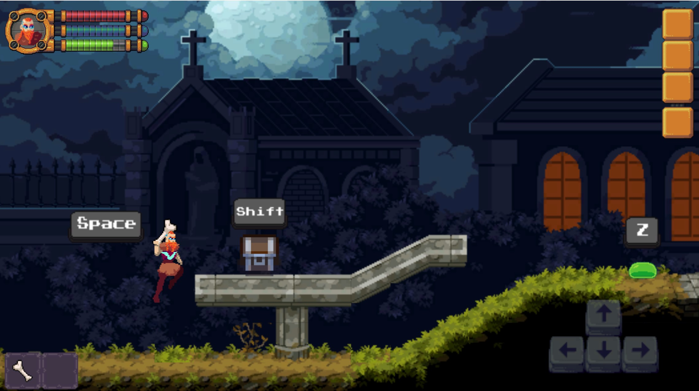
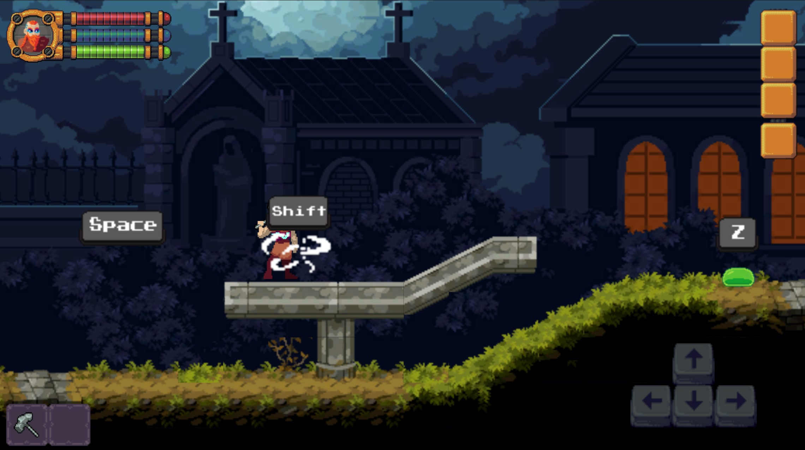
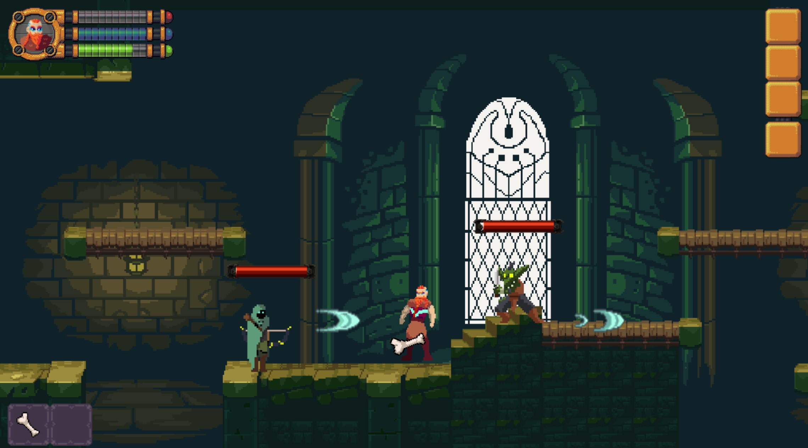
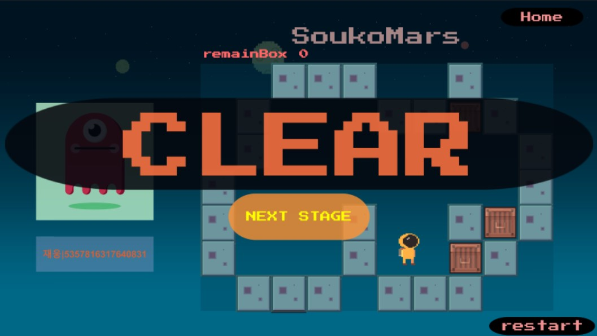
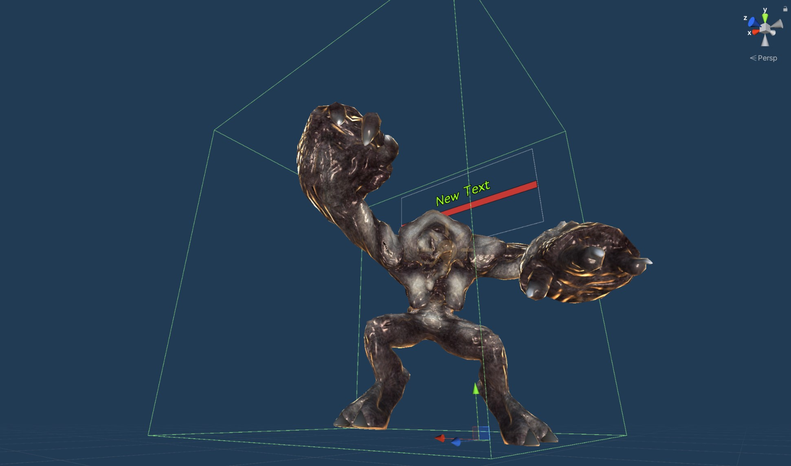
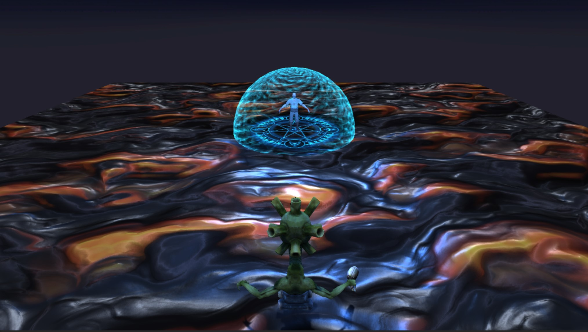

호기심을 "有"로 창조하는 게임개발자 정재웅 입니다.
Contact: coconotbi@naver.com
Turning Point
어느 날 자주 가던 카페에 키오스크라는 기계가 설치 되었습니다. 문득 세대가 빠르게 변화한다는 걸 다시 한번 인지하였고, IT 계열에 호기심의 불씨가 일어났습니다. 어릴 적부터 좋아했던 게임을 개발해 보고 다양한 분야에도 대입시키는 확장성을 믿고 게임 개발로 업종을 바꿨습니다. 호기심으로부터 생겨난 작은 흥미들이 앞으로의 저를 성장시킬 것입니다.
My Story
▼
1
팀 프로젝트
WHITE SMITH
게임 정보
분류
팀프로젝트 기간
2022.09.01 ~ 2022.11.25 (예정)사용 프로그램
C#, UNITY개발 이유
개발에 대해 자신감이 붙기 시작하여 지인과 함께 프로젝트를 진행하게 되었습니다. 2D 게임의 매력 중 하나인 타일 맵을 사용하여 게임을 개발해 보고 싶었고, 무엇보다 팀과의 소통이 주된 목적으로실무에서도 팀과의 협력, 소통, 깃허브 등의 연결을 직접 느껴보고자 개발을 하게 되었습니다
게임 설명
게임 이름은 “화이트 스미스”라는 이름으로 주로 은을 다루는 대장장이입니다. 세상이 감염되었지만 주인공은 면역을 갖고 있었고, 보스인 “블랙스미스”를 처치하는 로그라이크 형식의 게임입니다
CHECK POINT
몬스터의 애니메이션 및 행동 구현
몬스터 종류마다의 공격력 수치 적용 및 HP 수치
상자 및 포탈 상호작용
캐릭터 공격 콜라이더와 몬스터 공격 콜라이더
무기 교체 시 퀵슬롯의 무기 이미지 변화
원거리 공격에 대한 콜라이더 및 리지드바디 적용
▲ 메인로비
▲ 옵션창

▲ 점프 모션

▲ 아이템 상호작용
▲ 공격 모션
▲ 몬스터 행동 패턴 구현

▲ 피격 사망 모션
▲ 보스전
▲ 보스처치 후 포탈 생성
▲ 다음 스테이지는 현재 개발중 이므로 개발이 완료되는 즉시 사이트에 업로드 하겠습니다.
▼
3
개인 프로젝트

BEAT BIT
게임 정보
분류
개인프로젝트 기간
2022.07.01 ~ 2022.07.13사용 프로그램
C#, UNITY링크
개발 이유
게임 개발을 본격적으로 배우게 되면서 bit라는 용어를 배우게 되었고, 처음에는 생소한 bit를 교육용 게임으로 만들면 어린이들도 쉽게 bit에 접근할 수 있다고 생각하여 게임으로 개발하였습니다.
게임 설명
0 ~ 255의 숫자가 가운데 창에 랜덤으로 생성 되게 됩니다. 생성된 숫자와 일치하도록 파란색 카드를 뒤집어 합계가 일치하다면 GO 버튼을 눌러 포인트를 얻는 게임입니다
CHECK POINT
자동으로 생성되는 랜덤 숫자
반응형 UI 디자인으로 클릭 시 효과
얻은 포인트는 좌측 스크롤뷰에 갱신
60초 초과 시 게임종료
랜덤 버튼을 누르면 숫자가 초기화
숫자카드를 뒤집으면 상단에 수의 합계가 갱신
▲ EASY, NORMAL, HARD 난이도 선택 버튼 배치
▲ 난이도 선택 버튼 클릭시 게임스타트 윈도우창 생성
▲ 옵션 버튼 클릭시 사운드 윈도우 생성
▲ 게임 종료 버튼 클릭 시 윈도우 생성
▲ 인게임 들어가기전에 로딩바 구현
▲ 정답일 경우 Good 애니메이션과 함께 포인트 획득후 카드 리셋
▲ 오답일 경우 X 애니메이션 등장
▲ 60초 타이머 초과 시 게임오버
▲ 지금까지 얻은 포인트와 함께 점수에 따른 메달 획득
MARS THIEF
게임 정보
분류
개인프로젝트 기간
2022.08.16 ~ 2022.08.30사용 프로그램
C#, UNITY, Facebook SDK링크
개발 이유
어릴 적 어머니 휴대폰으로 많이 했던 소코반이라는 게임이 인상에 남았습니다. 태어나서 제일 처음 접한 게임인 만큼 저에게는 특별하게 다가왔습니다.개발을 배우고 나서 소코반이라는 고전 게임을 재해석해 보고 싶어서 개발하게 되었습니다.
게임 설명
필드상에 놓인 박스를 창고까지 옮기는 게임입니다. 상하좌우로 박스를 움직일 수 있으며 가로막힌 벽에 맞닿으면 돌이킬 수 없습니다.
CHECK POINT
박스의 상하좌우의 콜라이더로 충돌 감지
창고에 박스를 넣으면 남은 박스 갯수 갱신
페이스북 SDK를 사용하여 페이스북 로그인 연동
벽을 뚫을 수 없도록 박스 포지션값 이동
클리어 스테이지에 맞춰 해당 스테이지만 플레이 가능
▲ Facebook로그인 이전 화면
▲ Facebook로그인 이후 화면
▲ 스테이지 선택 윈도우 생성
 ▲ 스테이지 1 클리어 이후 스테이지 선택창
▲ 스테이지 1 클리어 이후 스테이지 선택창
▲ 스테이지 1 게임화면
▲ 스테이지 2 게임화면
 ▲ 스테이지 3 게임화면
▲ 스테이지 3 게임화면
▲ 창고에 상자를 넣을 시 남은 상자 카운트가 다운

▲ 스테이지 클리어 화면

FOG HUNTER
게임 정보
분류
개인프로젝트 기간
2022.09.15 ~ 2022.10.15사용 프로그램
C#, UNITY (안드로이드 빌드)링크
개발 이유
3D 게임 개발을 하기 전에 어떤 분위기의 게임을 만들어볼까? 하고 고민을 하던 중 이전 게임과는 다르게 어둡고 무서운 분위기의 3D 게임을 개발하게 되었습니다.
게임 설명
총을 사용하는 게임으로 맵 안에 존재하는 몬스터들을 사냥하고 보스 몬스터를 잡으면 클리어하는 형식의 게임입니다.
CHECK POINT
행동에 대한 애니메이션 적용
안드로이드 모바일 버츄얼스틱 구현
Terrain맵 제작
총알 수 제한과 장전 시간 적용
몬스터 성격에 따른 AI 행동패턴 구현
미니맵 제작
몬스터 공격 모션에 따른 콜라이더값 적용
몬스터 셰이더 구현
몬스터 범위내에 충돌 구현
▲ Start 버튼을 클릭 시 카메라 전환
▲ START 버튼을 클릭 후 TPS형식의 카메라 전환이 이루어진다
버추얼스틱 UI를 생성하고 EventHandler의 Drag를 사용하여
스틱의 위치에 따라 플레이어의 방향 전환 및 캐릭터 이동을
인자하여 움직인다.
미니맵 UI로 확대 / 축소 기능 구현이 가능
▲ 사격 버튼을 누를 시에 총에서 총알이 프리팹 형식으로
발사한다.
총알의 개수는 제한적이고 한발씩 발사할 때 총알 UI의 칸수도 함께
줄어든다.
벽을 설치하여 총알이 충돌할 때 부서지는 벽과 부서지지 않는 벽을
함께 배치
▲ 사격 모션
▲ 랜덤 행동 패턴을 구현 중인 몬스터에게 발각되면 플레이어 위치로 달려오게 된다.
공격에는 2~3가지 패턴이 존재하며 공격 패턴에 따라 작용하는 데미지의 수치도 변화한다.
▲ 좌측 HP바가 전부 사라지면 플레이어는 사망한다
▲ 몬스터를 공격하면 HP바가 생성되고 시간이 지나면 사라지도록 설정
▲ 몬스터에게 발각되면 이펙트와 함께 플레이어의 위치로 이동한다
▲ 몬스터에게 셰이더를 적용한 모습
림라이트(역광)와 반사광을 조절하는 셰이더를 작성하여
몬스터와 주변 조명에 어울리도록 설정
▲ 반사광과 홀로그램 위주의 셰이더를 작성하여 투명한 느낌의
메터리얼을 생성
▲ 몬스터가 이동하는 지점의 포인트를 DrawGizmos를 사용하여 가시적으로 표현 (돔 형태는 플레이어 발각 지점)
스크립트 상의 몬스터 성격과 경로 지정을 통하여 몬스터의 행동 패턴을 좀 더 디테일하게 묘사하였습니다.
ex) 성격을 Lazy로 선택했을 시 몬스터의 이동 확률이 낮아지므로 IDLE 상태가 길어집니다.

▲ 각 몬스터의 콜라이더는 공격 모션에 따라 크기나
위치가 조절됩니다.
▲ 플레이어 애니메이션
▲ 몬스터 애니메이션
▼
1
ETC
SHADER
게임 정보
분류
개인사용 프로그램
C#, UNITY링크
튜토리얼 설명
이전에 학습했던 셰이더를 이용하여 간단한 게임 튜토리얼을 제작하였습니다.셰이더에서 배웠던 2개의 노말 맵이 x축과 y축으로 교차하면서 이동하는 효과와 홀로그램을 이용하여 쉴드 안의 캐릭터가 보이도록 표시하여 쉴드가 사라지기 직전 디졸브를 이용하여 점차 사라져가는 효과를 셰이더로 적용하였습니다.
CHECK POINT
쉴드 셰이더 이펙트 효과
쉴드와 총알의 충돌 이펙트
쉴드안의 마법진 효과
플레이어 및 몬스터에 툰셰이더를 이용

▲ 쉴드 셰이더 및 바닥 셰이더 적용
 ▲ 몬스터가 총을 발사하는 장면
▲ 몬스터가 총을 발사하는 장면
▲ 총알과 궤적이 함께 따라감
 ▲ 총알 콜라이더가 쉴드에 닿았을때 파티클 이펙트
▲ 총알 콜라이더가 쉴드에 닿았을때 파티클 이펙트
▲ 쉴드의 일정 HP가 0이 되면 디졸브 셰이더로 쉴드가 점점 사라짐
▲ 쉴드가 사라진 후 라이팅과 파티클 이펙트가 사라짐